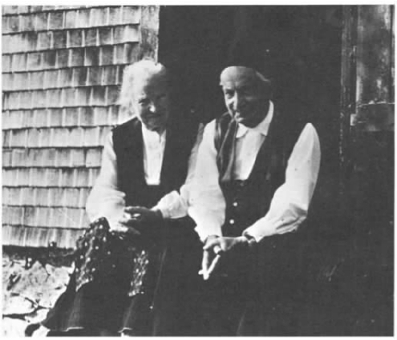
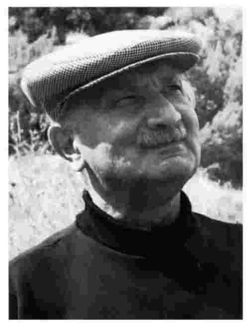

在海德格尔对此在的一般日常性的论述中，时间只发挥了次要的作用，虽然此在先于它自身这一论断已经隐含了时间。但在导论中他告诉我们时间对存在的问题至关重要：“所有本体论的中心问题植根于时间现象中。”（《存在与时间》，18）时间对此在的分析同样至关重要：“此在的存在在时间性中找到意义。”（《存在与时间》，19）为什么时间如此重要？
为什么是存在 与时间 ？为什么不是存在与空间 ？或者是真 理 或虚无 ？海德格尔没有明确提出这些问题，但是给出了回答这些问题的很多答案。他认为存在传统上就被用时间来观照。“存在”在希腊语中是ousia，与之相关的parousia一词则是指Anwesenheit，即“在场”的意思（《存在与时间》，25）。因此，希腊人用时间性在场来观照存在。不过，这是不正确的。Parousia只是由ousia衍生出的众多合成词中的一个。将ousia与表示在场的parousia关联，与将其同（比方说）表示不在场的apousia关联起来没有什么两样。在任何情况下，parousia都既可以表示时间性存在，也可以表示空间性存在，比如一个人出现在战场上。其实也有理由认为希腊人，至少是希腊哲学家，把存在与时间性在场关联起来：比如说柏拉图把存在只赋予不变的、永恒（或是永恒在场 ）的形式或理念，而不赋予那些“成为”中的、发生的、消隐的或灭亡的事物。但海德格尔在这里没有给我们这样的理由。

图61969年10月，海德格尔与埃尔弗里德在他们的小屋前
他也注意到哲学家们通常会依据时间性来划分实体。他们把人、植物和讲话这些时间性实体同数字和命题这些非时间性实体区分开来，这些又同像神这样的超时间的实体区分开来。（《存在与时间》，18）但是这种划分只不过是一种“暗示”，即存在只与时间关联。毕竟，只要时机恰当，海德格尔随时都会摈弃传统；他没有权利在传统适合他的时候才去请求它的支持。在任何情形中，他自己都会摈弃对实体的这种划分。他摈弃它是因为他不相信存在着非时间性或超时间性的实体。无论是在海德格尔的世界里，还是在高于或低于海德格尔的世界里，都不存在超时间性的上帝。如果存在的话，也就会存在独立于此在的永恒真理（参见《存在与时间》，227）；而现在的事实是，揭蔽存在者的历史任务是由有限的此在而非上帝来执行。与海德格尔同时代的许多哲学家，其中包括胡塞尔，曾假设在物理现实的第一场域和心理现实的第二场域之外，还应有一个感知或意义的“第三场域”。但是海德格尔认为，这一假设“同中世纪对天使的猜想一样令人质疑”（xxiv.306）。非时间性的命题、意义和理论都不存在。这些就是此在存在的所有方式，就像此在一样有着历史性和时间性。因此，海德格尔在这里所使用的分类法正是他所摈弃的。
如果我们看看非哲学家的语言，情形也好不到哪里去。在少数几个段落中，海德格尔提出了“为什么我们不会同等程度地谈论存在和空间”这个问题。他在其中的一段里面写道，普通词汇涉及的空间隐喻要多于时间隐喻。（xxxi.119）“此在”本身就是一个空间词汇。（xx.344）这一点自是理所当然，因为此在既是空间性的也是时间性的，否则就不可能存在。
那为什么时间是特殊的？有一种回答是，此在在时间中生存有着比在空间中生存更为深层的意义。它诞生于一个具体的地点和一个具体的时刻，这个地点和这个时刻都不是由它自己选择的。如果说我的出生地点 决定了我以后的教育和文化熏陶——比如说我的母语是英语或日语，那么出生地就当然是重要的。但我的出生地没有多少内在的 重要性。即使它会影响我早年受到的养育，如果愿意，我也可以通过旅行和学习来弱化它的影响。然而，我的出生时刻 给我的影响却不能这么轻易地被消除。如果我出生在1800年，我就不可能读到《存在与时间》这本书，假设人的最长寿命为一百一十五岁左右的话。我的出生日期限定了我在时间中所处的位置，并因此限定了我所可能选择的行动路径，而我的出生地却不可能这样对我在空间中的位置给予限定。
人需要自身生存的空间。在完全静止的状态中生活尽管可以想象，却绝对不是惬意的。但是，惬意的生活不一定就要四处游历。有人即使从未离开过自己出生的小镇或村庄，也一样可以活得很好。而生命则需要活到一个足够长的时间跨度。生活是由决定和活动组成的，完成这些的先决条件就是要有时间，并且关键的是还要花费时间，而不怎么强调空间：我会问现在或接下来做什么，却不会问在这里或在那里做什么。
本真与非本真之间的区别之一就是，本真此在并未浸淫于当前和即刻的过去和将来。本真此在向前看到它的死亡，向后看到它的诞生，并且越过它的诞生看到历史上的过去。为何是这样的？为什么不去走访遥远的地方，哪怕是在想象中？一种回答是：空间或地理上的旅行不能像时间意识或历史意识那样能使一个人对自己的生活作全面的考察。还有一种回答是：我现在所处的情境以及它所提供给我的可能性很大程度上取决于过去——包括我过去的生活和我所处文化的过去的历史，而与遥远的地方正在发生的事情基本无关（或者至少关联的方式不一样）。为了把握我现在所处的境况，我应当阅读（比如说）亚里士多德——对现今人们的思维方式仍有影响的人——而不是那些无法给我同样影响的当代外国作品。传统通过时间而非空间传递。（这就是为什么当评价一幅绘画作品或一部文学作品时，我们总想知道到底它能否经受“时间的考验”而不是它是否能经受“空间的考验”。）
因此，此在的生活所涉及的更关键的是时间而不是空间。但是，海德格尔对世界以及此在达及世界也感兴趣。两个有关时间的传统问题影响到这些方面。第一个问题让亚里士多德和圣奥古斯丁颇费思量。只有当前时刻当下存在着，而过去不再存在，将来还未存在。因此没有超越时间的事物或事件，没有在时间中持续的世界，只有即刻的世界的时间性片段以及其中的客体和事件的时间性片段。第二个问题让康德、胡塞尔和古代的思想家们感到困扰。我只能感知——看、听、触等——当下时刻有什么存在；或者，如果我们把光速和声速考虑在内，还能感受到刚过去的一瞬间的事物。那么，我们怎么能意识到过去、将来或一个在时间上持续的世界？这两个问题都特别与时间相关，而与空间没什么关系。我们不会被诱使去这样想：空间上离我们很远的事物不存在是因为它不在这里 。我们的感觉，特别是视觉，从任何一个给定的角度向我们揭蔽一个或多或少延展的空间范围。
海德格尔没有明确说明这些问题，但他仍对它们感到困扰。他的解决方法之前在亚里士多德、奥古斯丁和康德的阐述中已有所预示（《存在与时间》，427及下页），具体如下：此在在其意识中并未拘限于当下时刻，它既向前展望未来又回过头来追溯历史。此在是时间性的。正是此在的时间性使得世界在真正意义上才是时间性的，而且开启了“世界时间”，展露了一个持续的世界。人类不只是一个渺小的生物物种，在几百万个天体之一上面进化起来，不只是一个只存在于宇宙历史中微乎其微的一段的物种。海德格尔并未否认科学上的这些发现。曾经此在并不存在，尽管当时有存在者。但是，像宇宙这样的意指物乃是源于人类。正是此在派生出的这种意义才允许我们说，一些事情是有意义的而其他的则是琐屑的。此在进入世界是一件具有重大意义的事件。此后历史、意义、世界性，而且从某种意义上讲还有时间本身，都开始了。在海德格尔哲学里，此在接手了传统上本为上帝所承担的一些职责。此在的优势在于它是有限的、在世的和时间性的。不同于无限的、超时间性的、不变的神，此在面向世界也开启了世界。
海德格尔在《存在与时间》的第二部分并未直奔时间，而是从对死亡的论述开始。
海德格尔告诉我们，此在总是先于其自身，总是在准备着面对尚未实现的各种可能性。那么我们如何去从整体上把握此在呢？它似乎总是在躲避我们的把握，从不以实然和完整的面目把自身呈现给我们，实际呈现给我们的是尚未实现的可能性。但对于此在来说，存在着一个终极可能性，这一可能性会终止所有的可能性，那就是死亡。
这样一种引入死亡话题的方式也许有点牵强或者不自然。一个人无法对自身的生活给予完整的描述，即使他知道他会死，原因在于一般人并不知道自己何时或如何死，以及在死的同时他会做些什么。一个哲学家或许能对此在进行大致完整的描述，比如简单地说这样一句：此在总是先于自身的。他不需要明确说明此在具备哪些可能性，它又将如何实现这些可能性。只要说在它的生涯中的任何时候都有可能性就足够了。他肯定会提到死亡，因为死亡是此在的一个重要特征。但是，死亡的可能性并不是为了确保论述的完整性而作出的唯一 重要的考虑，它只是此在的特征之一。“还有，”他也许会说，“我千万不能忘了加上这句：这不会永远持续下去，此在总有一天会死。”
但是，海德格尔有充分的理由引入死亡这个话题。首先，死亡并不仅仅是，甚至并不主要是发生在一个人生命尽头的一件事情。此在意识到它会死，在任何时刻都有可能会死，这就意味着“垂死状态”、它对自身死亡的态度或对自身死亡的“面向状态”都渗透在它的整个生活中，并决定了它的整个生活形态。对死亡没有预见的生活将是一种无休止延期的生活。如果说我面前拥有的是永恒的生命（并且体力和脑力永不衰退），为什么现在要找麻烦写这本书呢？无论是作为哲学家还是自传家的此在，如果没有死亡就无法对自身进行完整的描述，原因就在于死亡无时无刻都萦绕在此在的生活之中。
引入死亡话题的第二个原因是，死亡尤为清晰地分辨出了绵羊和山羊、本真和非本真。迷失在匿名的“常人”中的非本真同意“人会死”。这是他人闲谈中涉及的，并且是模糊地涉及的，比如把自杀看成是“做蠢事”。但是他们遮蔽了我自身死亡的永远在场的可能性，甚至遮蔽了我自身 死亡的切近性。他们把垂死看做遥远的可能性，就像只会发生在别人身上而不是我自己身上——也就是说，只要我不抽烟、不参战或者不“做蠢事”。相反，一个本真的人总是意识到他自身死亡的可能性；在面对死亡时他会焦虑，尽管他不会害怕。他看着自己所处的境况以及境况所呈现给他的诸种可能性，并且借助意识，在它们中间作出抉择。意识到自己的死亡会将自己从“常人”的掌控中夺回：既然此在是要亲自去死的——垂死不是合作性的或共同性的事务——死亡就“把它作为个体单独的 此在来要求它……把此在个体化为它自身”（《存在与时间》，263）。这赋予此在一种特别的自由，“朝向死亡的自由”（《存在与时间》，266）。
引入死亡话题的第三个原因是它为海德格尔对时间的论述作了准备。非本真性的、日常性的此在当然是“先于它们自身的”——它们也将获得可能性——但它们不期待或者不“奔向”死亡的可能性，就像本真性此在所做的那样。但是此在只是奔向死亡，而不是跨越死亡。死亡将终止它自身的诸多可能性。这就意味着“本源性”的时间是有限的 ，会随着我的死亡而终止。（《存在与时间》，330）时间 永远持续，但我的 时间在慢慢消逝。这是否暗示了我没有理由为我的生命投保以便在我死后供养我所爱的人？或者没有理由为我死后作品的出版作些安排？当然不是。这确实意味着，无论我死后要作什么安排都要在死前完成。
这个“将来关闭了一个人将会拥有的可能；也就是说将来本身被关闭了”（《存在与时间》，330）。但是过去却不能这样关闭；海德格尔无意声称时间自一个人出生始而以其死亡终这一倾向。如我们将要看到的，他主要是对历史感兴趣。但是历史也给了海德格尔考虑死亡的理由，因为死亡使历史成为可能。这里的死亡，不是我自己的死亡而是我们祖先的死亡。历史就是与死去的此在打交道。过去的此在在意识到自身的必死性的情况下做出了辉煌的事迹，而且有趣的是它跟我们自己不同，因为它已死，但没有消失。
海德格尔说，从存在论意义上讲，“（对死亡）分析的结果表明，任何本体论的特征描述都具有特定的形式性和虚空性”（《存在与时间》，248）。“实体性地”看待这些结果是说将它们看做对此在作为生物体的Ableben，即死或亡的事实性声明。而“从本体论意义上”来看待它们的话，就符合海德格尔的精神意图，也就是把它们视做关于此在的存在以及关于它的Sterben，即此在之此在性垂死的哲学声明。海德格尔的结论是什么？它们包含以下几个命题：

图71970年海德格尔在勒托尔
1.我肯定是要死的。
2.我得自己去死。在一些特殊场合，他人会替我去死，就像他们会代表我去交电话费或者帮我去参加会议。但是迟早我是要自己去死的，不能让别人代替。
3.我会死的事实并不只是经验意义上的可能性，甚或是经验意义上确定无疑的。如果有一个人似乎不知道死是什么，这肯定是因为他“在死亡面前逃遁”（《存在与时间》，251）。
4.死亡会结束我的所有可能性，我死后不能再做任何事。
5.我的死亡时间是不确定的。
6.任何时候我都可能会死。
7.垂死赋予了此在以完整性。
8.死亡具有“非相关性”：死亡割断了一个人与其他人的所有关系。
其中有些命题，而不是所有命题，看上去是“形式性的和虚空的”。命题1和2能让人很容易接受，而且只是在它们有被遮蔽的倾向时才会特别有趣。它们并不是只适用于垂死：如果我并非快要死去，我肯定（比如说）会睡觉和撒尿，而这些我会亲自去做。命题3是值得怀疑的。通过归纳，我肯定会知道我将死去，根据是和我一样的前人的死亡以及我对自身年老的体验。海德格尔同意，“死亡”只在“经验意义上是确定的”，但他又说“就死亡的确定性来讲这又绝对不是决定性的”（《存在与时间》，257）。如果真是这样，“死亡”就必定与“肉体死亡”区别开来。如果说此在死亡的前提是它的肉体死亡，那么肉体死亡只在经验意义上是确定的这一事实要想成立，就需要有死亡只在经验意义上是确定的这个前提。海德格尔的意思并不是说，死亡和肉体死亡是完全区别开来的事件——就好像一个人的此在可能已死，但是他的肉体仍然是活蹦乱跳的，或者说在其肉体死亡之后仍作为此在活着。死和亡基本上是同时发生的，除了有可能在尼采和荷尔德林的情形中例外——在此二人身上，肉体死亡之前有一段长时间的疯癫。海德格尔的观点是，此在作为我的软件是首要的，而我的硬件肉体附属于它。因此在非经验意义上我知道我作为此在会死，但是从经验意义上讲我会作为一个生命有机体死去。这样并不就能推出死或亡可以 离开对方单独发生，即使我能想象 其中一方可以离开另一方发生。但是我怎么才能非经验性地知道我会死呢？
命题4也是有问题的。正如我们所看到的，我可以在生时对死后要发生的事作些安排。而且，对“来世”的信仰曾经——也许仍然——相当普遍。海德格尔声称他的“本体论”论述让这一可能性仍然敞开：
（《存在与时间》，247及下页）
海德格尔声言，他的论述也许会被任何人接受，不管他们信不信永生，并且还声称这个问题只有在我们对死亡进行观点模糊的论述之后才能恰当地讨论。但是他的论述真的能与永生相融合吗？如果此在在本质上存在于这个世界，那它又怎么能在从这个世界消失后仍作为此在存在下去？如果它不作为此在存在下去，它又会以什么身份存在下去呢？抑或此在死后在某种程度上继续在世，像鬼魅一样出现在世界上，或是进入了另一个世界？海德格尔几乎没有给这些信仰留下空间。不过，尽管不太站得住脚，它们表面上看来也还没有如此荒唐，以致对它们的否定是“形式性的和虚空的”。
命题5足够算得上正确。即使我决定在某个确定的时刻自杀，不一定我就会活到那个时刻，也不一定我就会实施我的决定，不一定炸弹会准时爆炸。命题6似乎是从命题5推出来的，但事实上并不是。举个例子，我不可能活过二百岁才死，尽管这是因为我肯定会在下一个百年之内死去；我什么时候死虽然不确定，但还是有限定范围的。命题6的主要问题不在于它说到的部分而在于它没说 的那部分。尽管有可能 （possible）我会在今晚十点或之前死，但这又相当地不可能 （unlikely）。我如何规划自己的生活，这毫无疑问取决于我在某一时刻会死去这一确定性以及我何时死的不确定性。如果我知道我会永生，或者说知道我会在今晚十点死，我现在就不会写这本书了。但是同样地，如果我没有相当的把握认为我会活着将这本书完成，我也不会这么做（或者至少我不会为做此事签定一个合同）。为什么海德格尔会忽略或然性呢，既然它对我的生活的管理同可能性一样地重要？部分原因是他把或然性与针对作为生物物种的人的寿命所进行的统计联系了起来。（《存在与时间》，246）它们针对的是亡而不是死。而且，即使统计学关涉的是我这一类人——英国中年男士、喜欢坐着抽烟斗的学者——它们并不关乎我本人的死亡，关乎的是我这类 人的死亡。但是，很难看出对一个人的生活进行安排是如何不需要对这个人寿命加以估算的，不管这种估算是建立在对相对类似的其他人命运的观察上，还是基于一个人“对自身的感觉”。
海德格尔忽略或然性的第二个原因是，此在就是其可能性，此在自己可以决定如何存在。这是否表明我可以在任何时刻自杀？这似乎是不可能的。首先，人在任何时刻都可以自杀是不正确的，即使人在任何时刻死去是可能的。他引用了一句他认同的古话：“人一旦出生，就立刻达到了可以死的年龄。”相当正确。人可能在婴儿时期夭折。但通常人在幼儿期不可能杀死自己。人在睡觉、酩酊大醉或戴着锁链时也不可能自杀。海德格尔再一次否认自杀是对死亡可能性的回应，因为它使可能性成为一种现实而不是保留它的可能性。（xx.439）恰恰就是这个反对自杀的观点的不充分性表明他对自杀有根深蒂固的偏见，也表明他在提及死亡的持续可能性时没有把自杀考虑在内。如果死亡是一种可能，同时又不是通常意义上可以选择的可能，我们为什么不能说，在某个特定时刻或者在一个既定时间内死亡是可能的（possible）或者是不可能的（unlikely）呢？
命题7为海德格尔的一个观点提供了极好的论据：此在不凭经验就知道它会死。此在是烦；它必须执行各种计划并且分配给这些计划一定的时间来安排生活。如果说它有取之不竭的时间可供支配，它怎么能做到呢？它做不到，就像即使我拥有无限量的财富我也无法成为一名审慎的金融经理人一样。但是，一个审慎的生命经营者或金融经理人需要知道比海德格尔所给予的更多的东西。他需要知道的不仅仅是他的生命就要终结或者他的资源有限。他还需要大致了解他能活多久，或者他有多少财富。如果我不知道我是拥有一百亿英镑还是一百英镑，我就无法明智地管理我的资金。如果我不知道我能活一分钟还是五百年，我就无法审慎地经营我的生活。如果在事件的自然进程中人大约在二十岁成熟，并且他们前面还有五百年可以充满活力地活着，那么他们就会更加反对冒险，不愿意牺牲剩下的几个世纪去喋血沙场或征服山峰，相比之下我们则比较愿意舍弃我们剩下的几年或几十年。
海德格尔并未给予此在足够的知识来作为烦而存在。但是，此在作为烦存在所需要的不一定就是知识 。如果我认为我有大约十万英镑可支配，我也许会审慎地管理我的资金——即使事实上我有十万亿甚至是无限量的财富，只是我自己不知道。同样地，如果此在认为 它会在七十五岁左右死去，此在可能会作为烦存在，即使事实上它会活得更久或永生。不同于审慎的资金管理者，此在肯定迟早会意识到它能比预想的多活很久（除非它患有周期性失忆），虽然它从不需要确定自己是永生的。对烦来说，重要的不是此在会 死，而是此在相信 它会死。海德格尔不需要反对这一点：对他来说重要的是“垂死”，人面向死亡的状态，而不是一般意义上的垂死或死亡。
命题8与命题2和4相关。如果死亡终结了所有的可能性（4），我就不能在死后再和其他人有积极的关系（8）；也许会有人仍然爱我或思念我，但我不能再报之以爱和思念。如果我得亲自去死，而不是有人替我去死（2），那么在我死后或临终，我就不能通过代理或代表的关系再与其他人发生关联。但是命题8包含的不仅是这些。垂死不像爱，在爱中某个人会是爱的对象，即使爱得不到回应。它也跟下棋不一样，下棋（通常）需要两个人一起下。它更像单人下棋。即使当两个或更多的人一起死时，他们也像在同一房间里玩单人下棋游戏一样，或者像两个人在同一张床上睡觉（这里取字面意思）。我们也许会说每个人都是孤独地死去。我们不妨加一句：每个人都是独自睡觉。
临终通常是件孤独的事情。但它是必须如此的么？为什么垂死或者垂死的过程不能更像下棋或跳舞那样，每个人的行为取决于对方的行为呢？我们安排好同时向对方射击。一对恋人死于悲伤，因为两人都以为对方要死了。勇士们为守关隘而留下来面对死亡，但是每个人这么做的前提是其他人也这么做。这正如恋人们搂在一起睡着了，一个人这样做是在另外一个这样做的时候并且因为另外一个人也这样做。
然而，垂死的过程在死亡中，即在已死的状态中告终。人们死后不能像他在垂死时那样与他人相关。在这方面并非只有死亡如此。在没有梦的睡眠中，人不能像在入睡时那样与他人相关。我们通常只是从睡眠中醒来，并重新恢复跟他人的关系。但是，为什么即使这样死亡还是需要“把此在个体化为其自身”？有两个理由可以怀疑它的必要性。第一，虽然人在死后不与他人相联系，但人也不是一个孤单的个体，处于孤独隔离的状态下。死后，人与他人不发生关联，但并未与其他人隔离开来；人只是不存在 了。第二，尽管一个死人不能从自身的观点 来与他人相关联——因为他不再有任何观点——但对于死前的他和在他死后的其他人来说，他与在死亡 中的他人似乎有着重要的关系。马拉松长跑中倒下的希腊人和在温泉关战役中倒下的斯巴达人被埋葬在共同的墓穴中；这样做在当时的人看来似乎很重要，因为这样就能纪念在死亡中或垂死过程中的战友情谊。如今正常的埋葬要求一人一墓，但是人们总是希望能被埋葬在确定的他人附近。海德格尔自己希望能葬在梅斯基希的父母身边。当他表达这一愿望时，对他死亡的预见并未将他个体化为无牵无挂的自我；他是弗里德里希·海德格尔和约翰娜·海德格尔的儿子，梅斯基希的本地人，死后跟乡亲们葬在了一起。这是非本真吗？当然，这跟他关心死后著作的出版一样都不是非本真的。但至少，海德格尔可能会回答说，看重对自己死亡的预见会迫使你考虑在重要意义上他人与你自己 的那些关联。你不再会在他们 的非本真中被消散掉，不会仅仅因为这是“一个人”要做的就满足于与家人埋葬在一起（或者同与你一同倒下的战友埋在一起）。我能不这样吗？按照风俗处置尸体要比按照风俗选择衣服更少些理由吗？海德格尔还是认为，至少在他生涯的这个阶段，垂死将此在个体化了：“从某种程度上讲，只有在垂死的时候我才可以绝对地说‘我存在’。”（xx.440）
本真的此在奔向自己的死亡。它会如何去做呢？答案在良知中可以找到。
问题是这样的。如果此在奔向自己的死亡，那么它就能脱离“常人”的掌控，并且为它自身的存在方式作出本真选择，而不仅仅是接受“常人”所给予他的有限的可能性。但是，它是怎么做到的？“常人”早就为死亡作准备。常人 告诉我不要担心，死是一种遥远的可能。因而此在仍然在“常人”的怀抱中。在这种情形下，此在实际上并没有良知，它对于自己是什么和要做什么不负责任，对任何事都没有负罪感。“常人”对事物负责，因为我是我所是的一切和我所为的一切，原因在于它是“一个人”的所是和所为。罪与责放在了“常人”的肩上。我甚至不去作任何实际的选择：我只要遵循“常人”所规定的惯例。
传统意义上的良知基于道德、根据指令实施什么行为或禁止什么行为。它常常被看做朝一个人呼喊的声音，有时被看做是上帝的声音，尽管并不是一成不变的。就这个意义上的“良知”来讲，陷入常人-自我中的某个人会缺乏良知。良知告诉我 做什么和不做什么，我是一个独立的自我，而不是常人-自我。它也许会告诉我不要做常人 做的事或者告诉我去做他人不做的事。如果我还没有避开常人-自我，我就无法拥有这种意义上的良知：我不把自己看做区别于他人的个体，从自己出发作出选择。海德格尔用了同一个词Gewissen，来指代传统意义上的良知和他所认为的具有更基本意义的良知，但是为方便起见，以下分别用平常书写的“良知”（conscience）和大写开头的“良知”（Conscience）来区分它们 [1] 。不是每个人都有传统意义上的良知，但是每个人都有良知 。良知 不会告诉我具体作出或避免什么选择，或者采取或省略什么行动，但是会呼唤我作出选择、采取行动并且为此负责。在我可以选择之前，我必须选择去作出选择。正是良知 让我作出这个选择的。只有在我已经选择了作出选择，回应了良知 的呼唤，我才具备了良知。如果我听到了良知 呼唤，是因为我想拥有良知 。每个人都有良知 ，而且它也会不断地呼唤每个人。但是不是每个人都会给予回应，而且没有人会在任何时刻都给予回应。这就是为什么良知的呼唤只会是时断时续的。
如果我完全受“常人”奴役，我怎么能听到良知 的呼唤？良 知 的呼唤又是怎么来的？这呼唤不是来自于上帝，也不是来自任何第三者。即使来自那里，这一点对回答我们的问题也没有多大帮助。我们仍然可以问：为什么有些人听到了上帝的呼唤而其他人却没有？是不是上帝的呼唤对有些人声音大一些而对其他人声音就更轻柔呢？抑或是有些睡眠者比其他人睡得更死呢？若是这样，良知 的呼唤就像一个只能叫醒浅睡眠者的闹钟的响铃一样。但是这声音并不是来自外部世界，它来自此在自身；此在呼唤此在。它可以来自于此在自身，因为此在从未完全或不可挽回地迷失在常人 中。此在退回到那些常人 的安全境地，多亏了“此在面对自身的逃遁——面对作为使之成其为自己的本真能力的自身”（《存在与时间》，184）。但是，此在必须瞥见它所逃离的事物。正是它对本真自我的残留意识，才使此在既能呼唤自身又能间或对呼唤作出反应。
当此在回应良知 的呼唤时，它想过同时拥有良知和良知吗？它是否获得了传统意义上的良知？海德格尔似乎并未对此给予肯定的回答。良知 的呼唤，跟良知的呼唤一样，向此在揭示的是它是负罪 的。但是这个意义上的罪 （Guilt，这里的大写字母G同样表明是海德格尔的特殊用法）并不是此在只是偶尔服从的某种事物。每个此在都是负罪的，但只有本真此在揭示了它的负罪，而且在完全意识到负罪的情况下做事。关于原初的、无法消除的负罪的观念不是海德格尔的原创。他有时会把它归到歌德身上：“正如歌德也同样说过，行为者总是不凭良知做事的（gewissenlos，字面意为‘没有良知’）。在我选择想拥有良知的时候我才能真正地按良知做事。”（xx.141）只是因为每个人都是负罪的，所以任何人都可能负罪。
为什么此在会负罪？以下有几个观点在发挥作用。此在自 己 作选择；它不能把对自身的责任转嫁到常人 或其他任何人身上。此在从几种可能性中选择了一种；它必然会忽略一些有价值的可能性而倾向于它已选择的那个。任何选择都会有此在没有预见到或无意想要的后果，但是对于这些后果它同样要负责。本真性的选择有可能触犯由常人 建立的规则。总而言之，当此在作选择时，也就是为了它的整个生命而不是接下来的两天选择一种存在方式时，它并没有什么最根本的理由作出这个选择而不是另外一个：“我们把‘负罪’的形式性存在观念定义为：一个被定义为‘非’其所是的存在者的存在-基础，作为虚无的存在-基础。”（《存在与时间》，283）
为什么此在是虚无的基础？在它的一般日常性中，此在所作的决定是对它之前做过的事情的自然而然的跟进。比如说，我答应不迟于明天修好马丁的鞋，因此我必须在今天下午开始修这双鞋。即使我面临两难的困境——我应该让马丁赊帐吗？能赊的话可以赊多少给他呢？——也有一些现成的步骤可以用于解决这个问题。常人 知道我在这种情况下应该干什么；我总是能按照他们说我应该做的去做。但是如果我选择的是整体生活的进程，情形就不一样了。我是否一直做一个鞋匠或者我是否应该成为一名牧师或进入政界？我过去的生活中没有什么能让我自然地去选择其中一项而不是另一项，因为我不是在一种事先确定的生活计划中来决定下一步该怎么走，而是在决定我的生活在整体上怎么走。咨询常人 也没有用。常人很有可能会说放弃做鞋的决定是愚蠢的。但是无论他们说什么都不再相关。我在选择我自己的生活，而不是他们的，而我这么做的事实也暗示了我已摆脱了他们的控制。奔向我的死亡又转向我的出生已经取代了向常人-自我求助来作为决定事情的方式。但是，如此一来我的选择似乎就缺少外在的基础。我为自己所规划的生活是一种虚无。如果我反思可供我选择的选项，情形也不会更好。这不再是常人 递给我看的一个菜单，而是一种事实。但是它受一种情形的制约：我不是自己选择。例如，我无法成为身披盔甲的骑士或者一名宇航员。与对事物的日常观点相反，良知 呼唤的人生抉择似乎完全是偶然的。正如约翰逊博士所说的：“只依赖理性选择一种未来的生活模式而不是另一种，这要求使用造物主并不乐意给予我们的那些能力。”
那么本真的此在做什么呢？它变得坚决、果断，即entschlossen，这个词语与表示“揭蔽”的erschlossen有关，而它本身在字面上就有“揭解、揭开”的意思。因而，“决心（entschlossenheit）是此在的揭示性（Erschlossenheit）的一种特别模式”（《存在与时间》，297）。决心以一种新的方法来揭蔽此在；此在从它的诞生到死亡对其生命作整体性的考察。它以一种新的方式揭蔽了世界和存在于其中的事物，包括其他人。因而它揭蔽的一系列可能性是不为日常此在所见的，迷失在那些常人 之中的。海德格尔对决心的描述受到了他对圣保罗、圣奥古斯丁以及马丁·路德信仰皈依所作研究的影响。保罗在去大马士革的路上见到圣光之后，尽管身处的是同一个世界，但是一切看上去都不同了。决心赋予此在的决定以命运攸关的重要性，尽管此在的投射是虚无的：路德说的不是“可能这是我应该做的”，而是“我站在这里，我只能这样做”。此在坚定地振作起来，同时也敞开了自己。后来在《存在与时间》中，海德格尔用了Augenblick这个词——字面意思是“眼睛-瞥见”，但是一般德国人将它用作“瞬间”或“时刻”的意思——表示“寻视的时刻”，在其中决断的此在审视隐藏在其情形中的可能性并作出决定性选择。
决断的此在应作出什么选择呢？它的选择会是对的还是错的？有没有什么标准来判断它的对错？传统意义上的良知常被认为容易犯错。决心会犯错吗？海德格尔没有暗示它会，也没有暗示有任何方式可以离开用来作出选择的决心去评估这个选择。毕竟，本真的此在不可能只是遵循他人关于对错的说法，它也不会求助于已确立的道德准则。任何可能向它建议的准则或标准本身就是必须选择或摈弃的东西。
卡尔·洛维特记录了海德格尔一个学生讲的笑话：“我很决断，只有在我面对我所不知道的事情的时候。”（洛维特，30）这是不合理的。一个决断之人很清楚他不得不做什么，即使他像保罗那样只能等待上帝的指示。但是没有哪一件事是一个决断人不得不做的，也没有什么规则是我们或某个具体的人可以据以决定应该做什么的。海德格尔自己在追求哲学的过程中非常决断，但是他并不可以因此就推荐这条路给所有人甚或那些具备条件的人。海德格尔总是拒绝写伦理学方面的书。他暗示说，“一项具体的道德规范”的存在并不取决于我们拥有一种“作为绝对约束性科学的伦理规范”（xvii.85）。我们都知道，即使在没有哲学和道德规范帮助的情况下，一般我们也应该还债或者恪守诺言。但是临到要面对有关我们生活方式的重大抉择时，一项具体的道德规范不会有什么帮助：要么它无法对我们的问题给予毫不含糊的回答，要么它自身也有问题。但是一种“作为绝对约束性科学的伦理规范”也没有什么用处。这种伦理也会让事情悬而未决或者它本身也有问题。海德格尔对基本抉择的态度与他对真理的态度一样。与事实相符并不见得就是真理，在最基本的情形中也不存在什么标准用来判断一个观点的真假。最好的办法就是具备“源始性”，尽可能地回溯到源头，而不要顾及那些常人的当前智慧。因此，还是要作选择。对于生活中的基本问题没有什么客观正确的答案，也没有识别这些答案的决定程序。最好就是一个人要变得决断，从人群中抽身出来，着眼于自己的生命整体作出抉择。一个人的选择就像他的断言，总是在一个特定的情境下作出的。对我来说在这个场合的好选择对他人无论是现在或以后不见得就是好选择，即使对以后场合中的我来说也不见得如此。然而，对此又没有什么解决办法。于是，要想保证我现在做的事情——比如说写这本书——在二十年后得到我的同意，唯一的办法就是把这件事推迟到二十年后。
一个此在注重良知 的呼唤而且在有决心的本真中奔向死亡。而另一个此在并不这样。前者比后者好吗？如果好的话，为什么呢？为什么有决心要比跟着日常性随波逐流好呢？如果海德格尔当时提倡要有决心，那他就是在提出一种伦理。当然，就我们的行为来看，它不是一种明确的伦理。有决心的此在无须决定放弃做鞋而去过一种更令人兴奋的生活。但是如果它继续做鞋，做鞋时就会“伴随着冷静的焦虑，使我们直面个体化的存在能力，……一种在这种可能性中无法撼动的快乐”（《存在与时间》，310）。他暗示说，这比你仅仅由于从来没想到过干别的事而一直做鞋好。
有决心在道德 上并不就比没有决心好。它并不保证我们要在道德上表现得更好或我们更有可能这样做。（希特勒并不比耶稣和和苏格拉底少半点决心。）也不是说有决心在道德上就会内在性地优越于没有决心。有决心的好处在于，有决心的此在会揭蔽自身、自身的可能性以及整体性，而没有决心的此在就不会这样做。日常性沉沦的此在就像我们所看到的，会倾向于错误地阐释自身：“我们自身所是的实体从本体论上讲是最远的实体。”（《存在与时间》，311；参见《存在与时间》，15）（参见lxiii.32：“此在说及自己，以某种方式审视自己，但是它只是一个面具，它把面具放在面前目的是为了不让自己恐惧。”）我们需要审视有决心的此在才能看见此在实际的样子。但是这会引来不少问题。海德格尔是不是认为有决心的此在就是实际意 义上的 此在，而没有决心的此在却不是这样的呢？如果是这样的话，有什么权利这样认为？我们绝大部分人在大部分时间都是没有决心的。为什么会认为我们只在有决心时才能成其为自己？为什么只有有决心的此在才能看清自己的实际样子？如果没有决心的此在把自己阐释为其他事物中的一种或者是人群中的一员，为什么这么做会被认为是错的呢？有决心的此在也许不是一个事物 ，而没有决心的此在或许会是。
海德格尔的回答是这样的：有决心和没有决心、本真和非本真都是此在存在的方式。从这个意义上讲，没有谁比谁优先。但是，没有决心的非本真此在不能对它自身的境况或者对决心给予恰当的阐释。这正如当一个人睡着或者在做白日梦时，这个人既 不能对睡觉和做白日梦也 不能对清醒和警觉给予足够的阐释。要阐释“常人”中的日常性和消散性，就需要间离出或超越这些状态。海德格尔在一生当中都深受着柏拉图在《理想国》中所讲的寓言的影响：普通人是洞中的囚犯，看着墙上的影子；其中有些人逃到了洞上面的世界，在那里他们看到了真正的客体，后来又看到了太阳本身；他们回到洞里劝说其他人也逃跑。只有一个曾经从洞中逃脱的人才能对洞里的情形和洞外的情形进行准确的描述。类似地，只有有决心才能对没有决心和有决心作出正确的描述。要成为一名哲学家就必须要有决心。首先，这个人必须脱离日常性的包围。其次，他必须凌驾于现有的哲学境况及其身后的传统之上。如果不想只研究单调的常规哲学，他就不能只是接受哲学史上传承下来的观念、学说和问题。他得奔向自身的死亡，回溯过去，回到哲学传统的源头。这样他就是把握传统而不是被传统把握，他就把常人 远远甩在了身后。或者正如海德格尔所说的：“当一种研究工作，一方面像所有研究一样，其本身具有所揭蔽的此在的一种存在方式，另一方面又要使属于生存的存在之领会成形为概念，这种研究竟能不包含这种对此在本质性的筹划活动吗？”（《存在与时间》，315）当然不能，就像不能期待此在在睡梦中进行哲学思考一样。